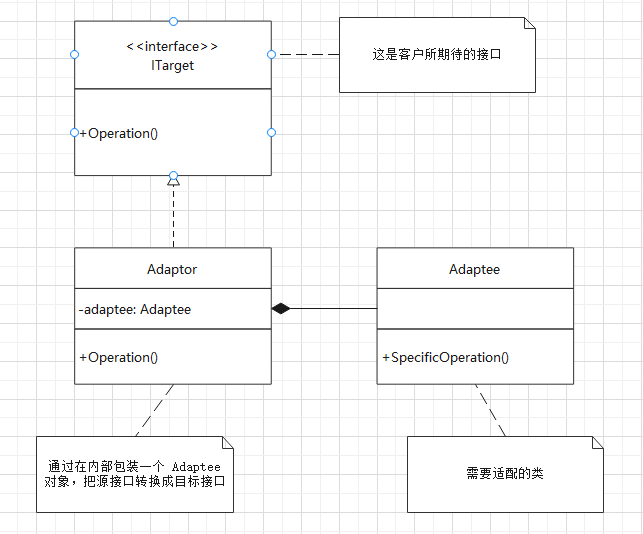

课程笔记：极客时间—设计模式之美
适配器模式
解决的问题：适配器模式就是用来做适配的，它将不兼容的接口转换为可兼容的接口，让原本由于接口不兼容而不能一起工作的类可以一起工作。
2种实现方式
适配器模式有两种实现方式：类适配器和对象适配器。其中，类适配器使用继承关系来实现，对象适配器使用组合关系来实现。
类适配器
类适配器的代码实现如下。
public interface ITarget {
void f1();
void f2();
void fc();
}
public class Adaptee {
public void fa() {}
public void fb() {}
public void fc() {}
}
public class Adaptor extends Adaptee implements ITarget {
public void f1() {
super.fa();
}
public void f2() {
// 重新实现 f2()
}
// fc() 不需要实现，直接继承自 Adaptee
}对象适配器
对象适配器的代码实现如下。
public interface ITarget {
void f1();
void f2();
void fc();
}
public class Adaptee {
public void fa() {}
public void fb() {}
public void fc() {}
}
public class Adaptor implements ITarget {
private Adaptee adaptee;
public Adaptor(Adaptee adaptee) {
this.adaptee = adaptee;
}
public void f1() {
adaptee.fa();
}
public void f2() {
// 重新实现 f2()
}
public void fc() {
adaptee.fc();
}
}如何选择？
判断标准：
Adaptee接口的个数Adaptee和ITarget的契合程度
如果 Adaptee 接口并不多，那两种实现方式都可以。
如果 Adaptee 接口很多，而且 Adaptee 和 ITarget 的接口定义大部分都相同，则推荐使用类适配器，因为 Adaptor 复用父类 Adaptee 的接口，代码量更少。
如果 Adaptee 接口很多，而且 Adaptee 和 ITarget 的接口定义大部分都不相同，则推荐使用对象适配器，因为组合结构相对于继承更加灵活。
5种常见的应用场景
一般来说，适配器模式可以看作一种“补偿模式”，用来补救设计上的缺陷。适配器模式的应用场景是“接口不兼容”。
封装有缺陷的接口设计
假设我们依赖的外部系统在接口设计方面有缺陷（比如包含大量静态方法），引入后会影响到我们自身代码的可测试性。为了隔离设计上的缺陷，我们希望对外部系统提供的接口进行二次封装，抽象出更好的接口设计，这个时候就可以使用适配器模式了。
例：
// 这个类来自外部 sdk ，我们无权修改它的代码 public class CD { public static void staticFunc1() {} public void uglyNamingFunc2() {} public void tooManyParamsFunc3(int paramA, int paramB, ...) {} public void lowPerformanceFunc4() {} } // 使用适配器模式进行重构 public interface ITarget { void func1(); void func2(); void func3(ParamsWrapperDefinition paramsWrapper); void func4(); } public class CDAdaptor extends CD implements ITarget { public void func1() { super.staticFunc1(); } public void func2() { super.uglyNamingFunc2(); } public void func3(ParamsWrapperDefinition paramsWrapper) { super.tooManyParamsFunc3(paramsWrapper.getParamA(), ...); } public func4() { // 重新实现 lowPerformanceFunc4() } }统一多个类的接口设计
某个功能的实现依赖多个外部系统（或者说类）。通过适配器模式，将它们的接口适配为统一的接口定义，然后我们就可以使用多态的特性来复用代码逻辑。
例：假设我们的系统要对用户输入的文本内容做敏感词过滤，为了提高过滤的召回率，我们引入了多个第三方过滤系统，依此对用户输入的内容进行过滤。但是每个系统提供的过滤接口都是不同的，这意味着我们没法复用一套逻辑来调用各个系统。这时，可以使用适配器模式，将所有过滤系统的接口适配为统一的接口定义，进而可以复用调用敏感词过滤的代码。代码示例如下，
public class ASensitiveWordsFilter { public String filterSexyWords(String text) {} public String filterPoliticalWords(String text) {} } public class BSensitiveWordsFilter { public String filter(String text) {} } public class CSensitiveWordsFilter { public String filter(String text, String mask) {} } // 未使用适配器模式之前的代码：代码的可测试性、扩展性不好 public class RiskManagement { private ASensitiveWordsFilter aFilter; private BSensitiveWordsFilter bFilter; private CSensitiveWordsFilter cFilter; public String filterSensitiveWords(String text) { String maskedText = aFilter.filterSexyWords(text); maskedText = aFilter.filterPoliticalWords(text); maskedText = bFilter.filter(text); maskedText = cFilter.filter(text, "***"); return maskedText; } } // 使用适配器模式进行重构 public interface ISensitiveWordsFilter { String filter(String text); } public class ASensitiveWordsFilterAdaptor implements ISensitiveWordsFilter { private ASensitiveWordsFilter aFilter; public String filter(String text) { String maskedText = aFilter.filterSexyWords(text); maskedText = aFilter.filterPoliticalWords(text); return maskedText; } } public class BSensitiveWordsFilterAdaptor implements ISensitiveWordsFilter { private BSensitiveWordsFilter bFilter; public String filter(String text) { String maskedText = bFilter.filter(text); return maskedText; } } // 省略 CSensitiveWordsFilterAdaptor 的实现 // 扩展性更好，更加符合开闭原则，添加新的过滤器时，这个类完全不需要修改； // 可测试性好，因为它基于接口而非实现编程。 public class RiskManagement { private List<ISensitiveWordsFilter> filters; public void addSensitiveWordsFilter(ISensitiveWordsFilter filter) { filters.add(filter); } public String filterSensitiveWords(String text) { String maskedText = text; for (ISensitiveWordsFilter filter: filters) { filter.filter(maskedText); } return maskedText; } }替换依赖的外部系统
当我们把项目种依赖的一个外部系统替换为另一个外部系统的时候，使用适配器模式，可以减少对代码的改动。
例：
// 外部系统 A public interface IA { void fa(); } public class A implements IA { public void fa() {} } // 在我们的项目中，外部系统 A 的使用示例 public class Demo { private IA a; public Demo(IA a) { this.a = a; } } Demo d = new Demo(new A()); // 将外部系统 A 替换成外部系统 B public class BAdaptor implements IA { private B b; public BAdaptor(B b) { this.b = b; } public void fa() { b.fb(); } } // 借助 BAdaptor ，Demo 的代码中，调用 IA 接口的地方无需改动， // 只需要将 BAdaptor 如下注入到 Demo 即可。 Demo d = new Demo(new BAdaptor(new B()));兼容老版本接口
在做版本升级的时候，对于一些要废弃的接口，我们不直接将其删除，而是暂时保留，并且标注为 deprecated，并将内部实现逻辑委托为新的接口实现。这样做的好处是，让使用它的项目有个过渡期，而不是强制进行代码修改。这也可以粗略的看作适配器模式的一个应用场景。
例：JDK2.0 对 JDK1.0 中的一个遍历集合容器的类
Enumeration进行了重构，将它改名为Iterator类，并对它的代码实现做了优化。为了前向兼容，JDK2.0 保留了Enumeration类，并将其实现替换为直接调用Iterator。public class Collections { public static Enumeration enumeration(final Collection c) { return new Enumeration() { Iterator i = c.iterator(); public boolean hasMoreElements() { return i.hasNext(); } public Object nextElement() { return i.next(); } } } }适配不同格式的数据
适配器模式主要用于接口的适配，实际上，它还可以用在不同格式的数据之间的适配。
例：Java 中的
Arrays.asList()也可以看作一种数据适配器，将数组类型的数据转化为集合容器类型。List<String> stooges = Arrays.asList("Larry", "Moe");
案例剖析：slf4j 日志框架
slf4j 日志框架，提供了一套打印日志的统一接口规范。不过，它只定义了接口，并没有提供具体的实现，因此需要配合其他日志框架（log4j、logback…）来使用。
由于 slf4j 的出现晚于 log4j 等日志框架，所以这些日志框架也不可能牺牲掉版本兼容性，将接口改造成符合 slf4j 接口规范。
因此，slf4j 还提供了针对不同日志框架的适配器。对不同日志框架的接口进行二次封装，适配成统一的 slf4j 接口定义。
具体的代码示例如下：
// slf4j 统一的接口定义
package org.slf4j;
public interface Logger {
public boolean isTraceEnabled();
public void trace(String msg);
// ...
public boolean isDebugEnabled();
public void debug(string msg);
// ...
}
// log4j 日志框架的适配器
// 其中 LocationAwareLogger 继承自 Logger
package org.slf4j.impl;
public final class Log4jLoggerAdaptor implements LocationAwareLogger {
final transient org.apache.log4j.Logger logger;
public boolean isDebugEnabled() {
return logger.isDebugEnabled();
}
public void debug(String msg) {
logger.log(FQCN, Level.DEBUG, msg, null);
}
// ...
}适配器模式类图

对比其他几种设计模式
代理模式、桥接模式、装饰器模式、适配器模式，这4种模式是比较常用的结构型设计模式。
它们的相同点：
- 代码结构非常相似；
- 它们都可以称为
Wrapper模式，也就是通过Wrapper类二次封装原始类。
它们的不同点：解决的问题、应用场景不同。
- 代理模式：在不改变原始类接口的条件下，为原始类定义一个代理类，主要目的是控制访问，而非加强功能，这是它跟装饰器模式最大的不同。
- 桥接模式：目的是将接口部分和实现部分分离，从而让它们可以较为容易、也相对独立的变化。
- 装饰器模式：在不改变原始类接口的条件下，对原始类功能进行增强，并且支持多个装饰器的嵌套使用。
- 适配器模式：是一种事后的补救策略。适配器提供跟原始类不同的接口，而代理模式、装饰器模式提供的都是跟原始类相同的接口。